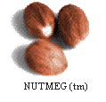

Class java.Nutmeg.NDictionary
|
| Welcome to THOUGHT Inc.
| 
|
Nutmeg Class Hierarchy Method Names
Class java.Nutmeg.NDictionary
java.lang.Object
|
+----java.Nutmeg.Collection
|
+----java.Nutmeg.Set
|
+----java.Nutmeg.NDictionary
- public class NDictionary
- extends Set
Copyright (c) 1995, 1996 THOUGHT Inc. All Rights Reserved.
NDictionary class (a growable array).
This is a NDictionary class which uses an NAssociation class to keep
track of key/value pairs.

-
 NDictionary(int, int)
NDictionary(int, int)
- Constructor for NDictionary with an initial storage capacity
and a specified growSize.
-
NDictionary(int)
- Constructs an empty NDictionary with the specified storage capacity, and
a default capacity increment.
-
NDictionary()
- Construct an empty NDictionary.

-
 associationAt(Object)
associationAt(Object)
- Returns the specified Association with a key which matches aKey.
-
associationAtIfAbsent(Object, DoBlock)
- Returns the specified Association with a key which matches aKey, if
the key is not found, execute doBlock.
-
associationsDoBlock(DoBlock)
- Execute the doBlock on each Association in the NDictionary.
-
associationsSelect(DoBlock)
- For each NAssociation, evaluate doBlock with the association as
the argument.
-
at(Object)
- Returns the specified value whose key which matches aKey from the
NAssociations in the NDictionary.
-
atIfAbsent(Object, DoBlock)
- Returns the specified value whose key which matches aKey from the
NAssociations in the NDictionary.
-
atIfAbsentPut(Object, DoBlock)
- Returns the specified value whose key which matches aKey from the
NAssociations in the NDictionary.
-
atPut(Object, Object)
- Adds aValue to NDictionary wherever aKey belongs in the ordering.
-
clone()
- Clone this NDictionary.
-
doBlock(DoBlock)
- Execute the doBlock on the value component of each NAssociation in
this NDictionary.
-
includes(Object)
- Find out whether the NDictionary inclues aValue in any of it's
NAssociations or not.
-
includesKey(Object)
- Find out whether the NDictionary includes aKey in any of it's
NAssociations or not.
-
keyAtValue(Object)
- Return key of NAssociation which has value that matches aValue.
-
keyAtValueIfAbsent(Object, DoBlock)
- Return key of NAssociation which has value that matches aValue.
-
keys()
- Iterate through the NDictionary, and add key Objects from each
NAssociation to a new Set.
-
keysAndValuesDo(DoBlock)
- Iterate through the NDictionary, and add value Objects from each
NAssociation to a new Set.
-
keysDo(DoBlock)
- For each NAssociation, evaluate with the key as it's first
argument and the value as it's second argument.
-
occurrencesOf(Object)
- Counts the number of occurrences of aValue among the value components
of the NAssociations in this NDictionary.
-
removeAssociation(NAssociation)
- Remove the NAssociation which matches anAssociation.
-
removeIfAbsent(Object, DoBlock)
- WARNING!
This is not a valid method for this class, and will result in an
exception being thrown.
-
removeKey(Object)
- Remove the NAssociation whose key matches aKey.
-
removeKeyIfAbsent(Sortable, DoBlock)
- Remove the NAssociation whose key matches aKey, if no NAssociations
match, then execute doBlock.
-
select(DoBlock)
- Return a new NDictionary cast as a (Collection) with the value part
of only those objects which produce a true return code from the
doBlock execution.
-
values()
- Iterate through the NDictionary, and add value Objects from each
NAssociation to a new Set.

 NDictionary
NDictionary
public NDictionary(int initialSize,
int growSize)
- Constructor for NDictionary with an initial storage capacity
and a specified growSize.
- Parameters:
- initialSize - initial storage capacity of data storage
- growSize - the increment that storage should grow by
size doubles if value is 0.
NDictionary
public NDictionary(int initialSize)
- Constructs an empty NDictionary with the specified storage capacity, and
a default capacity increment. Capacity increment is defaulted to 0
using this constructor.
- Parameters:
- initialSize - initial storage capacity of data storage.
NDictionary
public NDictionary()
- Construct an empty NDictionary. This defaults to an initial storage
capacity of 10 objects, and a growSize of 0.

 associationAt
associationAt
public synchronized Object associationAt(Object aKey)
- Returns the specified Association with a key which matches aKey.
- Parameters:
- aKey - the key to lookup.
- Returns:
- Object return Association found with key matching aKey.
associationAtIfAbsent
public final synchronized Object associationAtIfAbsent(Object aKey,
DoBlock doBlock)
- Returns the specified Association with a key which matches aKey, if
the key is not found, execute doBlock.
- Parameters:
- aKey - the key to lookup.
- doBlock - the ExceptionBLock to execute if no key was found
matching aKey.
- Returns:
- Object return Association found with key matching aKey.
associationsDoBlock
public final void associationsDoBlock(DoBlock doBlock)
- Execute the doBlock on each Association in the NDictionary.
- Parameters:
- doBlock - the Do Block which is to be executed on each member.
associationsSelect
public synchronized NDictionary associationsSelect(DoBlock doBlock)
- For each NAssociation, evaluate doBlock with the association as
the argument. Return a new NDictionary containing the NAssociations
for which doBlock evaluates to true.
- Parameters:
- doBlock - The block to evaluate each NAssociation with.
- Returns:
- NDictionary A collection containing the Associations which
evaluate to true.
at
public synchronized Object at(Object aKey)
- Returns the specified value whose key which matches aKey from the
NAssociations in the NDictionary.
- Parameters:
- aKey - the key to lookup.
- Returns:
- Object The value part of NAssociation found with key
matching aKey is returned when found, otherwise a null is returned.
atIfAbsent
public synchronized Object atIfAbsent(Object aKey,
DoBlock doBlock)
- Returns the specified value whose key which matches aKey from the
NAssociations in the NDictionary. If no key is found, then execute
doBlock.
- Parameters:
- aKey - the key to lookup.
- doBlock - the doBlock to execute if key not found.
- Returns:
- Object The value part of NAssociation found with key
matching aKey is returned when found, otherwise a null is returned.
atIfAbsentPut
public synchronized Object atIfAbsentPut(Object aKey,
DoBlock doBlock)
- Returns the specified value whose key which matches aKey from the
NAssociations in the NDictionary. If no key is found, then execute
doBlock and add Object returned from that execution.
- Parameters:
- aKey - the key to lookup.
- doBlock - the doBlock to execute if key not found.
- Returns:
- Object The value part of NAssociation found with key
matching aKey is returned when found, otherwise a null is returned.
atPut
public synchronized Object atPut(Object aKey,
Object aValue)
- Adds aValue to NDictionary wherever aKey belongs in the ordering.
- Parameters:
- aKey - the key to lookup.
- aValue - the value to be added at the location determined by aKey.
- Returns:
- Object aValue is returned.
doBlock
public void doBlock(DoBlock doBlock)
- Execute the doBlock on the value component of each NAssociation in
this NDictionary.
- Parameters:
- doBlock - the Do Block which is to be executed on each
NAssociation's value.
- Overrides:
- doBlock in class Collection
includes
public boolean includes(Object aValue)
- Find out whether the NDictionary inclues aValue in any of it's
NAssociations or not.
- Parameters:
- aValue - the value to look up.
- Returns:
- boolean True if includes aValue, false if doesn't.
- Overrides:
- includes in class Collection
includesKey
public boolean includesKey(Object aKey)
- Find out whether the NDictionary includes aKey in any of it's
NAssociations or not.
- Parameters:
- aKey - the key to look up.
- Returns:
- boolean True if includes aKey, false if doesn't.
keyAtValue
public Object keyAtValue(Object aValue)
- Return key of NAssociation which has value that matches aValue.
- Parameters:
- aValue - the key to look up.
- Returns:
- Object The value part of the found NAssociation if it exists,
otherwise null.
keyAtValueIfAbsent
public Object keyAtValueIfAbsent(Object aValue,
DoBlock doBlock)
- Return key of NAssociation which has value that matches aValue.
- Parameters:
- aValue - the key to look up. If the value is not found, then
execute doBlock.
- doBlock - the exception block to execute if failure.
- Returns:
- Object The value part of the found NAssociation if it exists,
otherwise null.
keys
public Set keys()
- Iterate through the NDictionary, and add key Objects from each
NAssociation to a new Set.
- Returns:
- Set The Set of all keys from this NDictionary.
keysAndValuesDo
public void keysAndValuesDo(DoBlock doBlock)
- Iterate through the NDictionary, and add value Objects from each
NAssociation to a new Set.
- Parameters:
- doBlock - The DoBlock to execute with each key/value pair in
NDictionary.
- Returns:
- Set The Set of all values from this NDictionary.
keysDo
public void keysDo(DoBlock doBlock)
- For each NAssociation, evaluate with the key as it's first
argument and the value as it's second argument.
- Parameters:
- doBlock - The DoBlock to execute with each key in this NDictionary.
- doBlock - The block to execute with each NAssociation.
occurrencesOf
public synchronized int occurrencesOf(Object aValue)
- Counts the number of occurrences of aValue among the value components
of the NAssociations in this NDictionary. If no occurrences are
found, then return a 0.
- Parameters:
- aValue - The value to compare each NAssociation's value with.
- Returns:
- int Number of times aValue was found among the NAssociation's
values.
- Overrides:
- occurrencesOf in class Collection
removeIfAbsent
public synchronized void removeIfAbsent(Object aValue,
DoBlock doBlock)
- WARNING!
This is not a valid method for this class, and will result in an
exception being thrown. It isn't appropriate to remove a value
in this class using it's value field.
- Parameters:
- aValue - The value matching the Associations to be removed.
- doBlock - The block to be executed if value is not found.
- Throws: NotImplementedInThisClass
- not a valid call for this class
- Overrides:
- removeIfAbsent in class Set
removeAssociation
public synchronized void removeAssociation(NAssociation anAssociation)
- Remove the NAssociation which matches anAssociation.
- Parameters:
- anAssociation - The NAssociation to find and remove from this
NDictionary.
removeKey
public synchronized void removeKey(Object aKey)
- Remove the NAssociation whose key matches aKey.
- Parameters:
- aKey - The key Object which is to be compared with each
NAssociation in this NDictionary to find the first which matches so it
can be removed.
removeKeyIfAbsent
public synchronized void removeKeyIfAbsent(Sortable aKey,
DoBlock doBlock)
- Remove the NAssociation whose key matches aKey, if no NAssociations
match, then execute doBlock.
- Parameters:
- aKey - The key Object which is to be compared with each
NAssociation in this NDictionary to find the first which matches so it
can be removed.
- doBlock - The block to execute if no NAssociations match the key.
select
public synchronized Collection select(DoBlock doBlock)
- Return a new NDictionary cast as a (Collection) with the value part
of only those objects which produce a true return code from the
doBlock execution. This is a shallow copy.
- Parameters:
- doBlock - the Do Block which is to be executed on each member.
- Returns:
- a new NDictionary with a copy of the objects selected.
- Overrides:
- select in class Collection
values
public Set values()
- Iterate through the NDictionary, and add value Objects from each
NAssociation to a new Set.
- Returns:
- Set The Set of all values from this NDictionary.
clone
public synchronized Object clone()
- Clone this NDictionary. The objects are not cloned.
- Returns:
- a new Object identical to the current one.
- Overrides:
- clone in class Set
Nutmeg Class Hierarchy Method Names